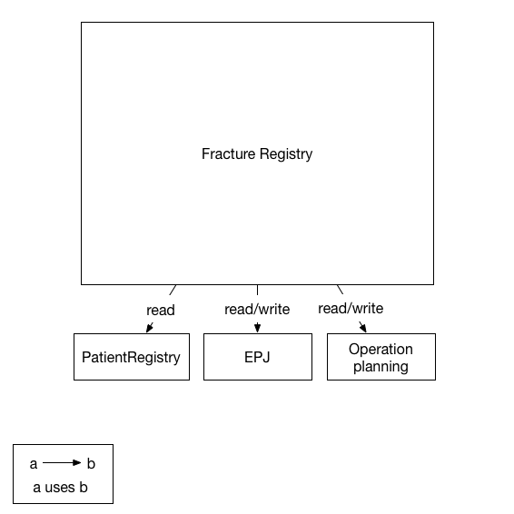
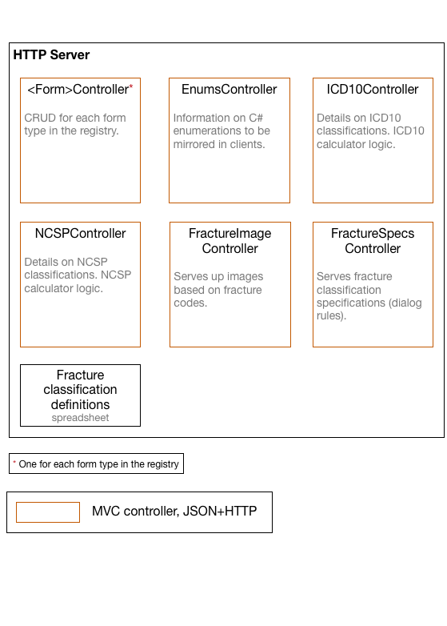
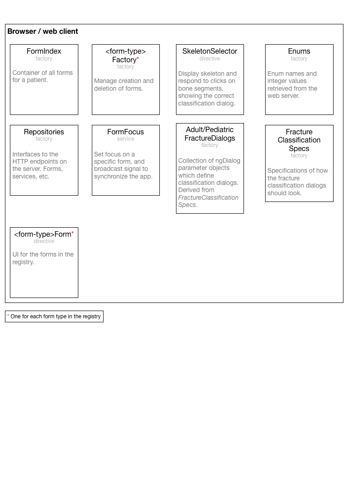

Architecture¶
This architecture documentation applies Simon Brown’s C4 software architecture model. The basic principle is to show the architecture are several levels of details - context, containers, components, and classes - which are defined in the C4 approach and which have proven practical and effective for communicating architectures across many projects.
Practically speaking, the most interesting view for this documentation is the components view. The context and containers views are both quite simple and are essentially identical (with a notable exception) to what you would find for any MRS-based registry.
Overview¶
Architecturally, Fracreg is very similar to most other MRS-based registries. It comprises a web server written using C# and MVC, a SQL Server database, a web client built with Angular and Bootstrap. It differs from other registries substantially, though, in that the client is is largely implemented as a single-page app (SPA). That is, rather than refreshing the browser for each view in the registry, Fracreg fetches a lot of JavaScript from the server at startup, and this JavaScript manages the display of different views. It uses asynchronous fetches to get new data from the server as necessary.
Another critical aspect in which Fracreg differs from other registries is that it fetches all of the forms for a patient when it starts up. This allows Fracreg to quickly render these forms without needing to communicate with the server, thereby allowing the user to quickly browse through a patient’s history.
These differences mean that the web client is somewhat more complex than other MRS-based registries, and in fact it’s fair to say that almost all of the complexity of the system is in the web client. The back-end of Fracreg is generally very simple.
Context¶
The context diagram shows the overall Fracreg system boundary and the external systems with which Fracreg will communicate.

Components¶
A component diagram shows the major logical components inside a container.
HTTP Server¶
The HTTP server in Fracreg provides access to form data as well as domain information, enumeration mappings, and tools for performing certain kinds of domain calculations. The majority of this is served as JSON data, while some (e.g. fracture images) is served in other, more appropriate formats. The HTTP server, of course, also serves up the HTML, CSS, JavaScript, etc. that comprise the client application.

Client¶
The web client is primarily written in Angular using bootstrap for main styling. The components are all one form of Angular element or another: services, factories, directives, etc.
